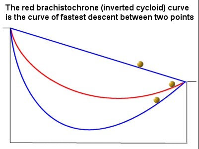

Introduction
 The Brachistochrone curve is a beautiful curve that fascinates the world of mathematics and physics. The brachistochrone curve name came from the Greek culture where brachistos stands for ”shortest” and Chronos meaning ”time”. This is also known as the curve of the fastest descent.
Brachistochrone curve is the shortest path for an object to travel from point A to a lower point B (where B should not be exactly below point A). If any object slide frictionlessly on the brachistochrone curve under the influence of a uniform gravitational field then the time of descent for that object will be minimum. The brachistochrone curve is a type of cycloid.
Brachistochrone curve is independent of both the mass of the object and the gravitational pull faced by the object. the equation of the brachistochrone curve with no friction is given by the parametric equation of an cycloids given by:-
x(t) = a(t − sint)
y(t) = a(t − cost)
in the above equation ’a’ is a constant and ’t’ is a parameter that varies from 0 to 2π. this curve starts from point (0,0) and ends at point (2a,0).
History
The brachistochrone curve was first introduced by Johann Bernoulli in 1696. but also before that in 1638, one of the great scientists of that time Galileo Galilee also tried to solve a similar problem which he mentioned in his work ”Two New Sciences” but in that, he concluded that the path of the descent is faster for the arc of the circle than any number of his chords. From Galileo’s discovery, it was concluded that the shortest path for any two points is not the quickest path. After that, Galileo further studied and found out what the cycloid is and gave it its name. After that, he reviewed his own and said that the connection between cycloid and the problem of finding the shortest path has to wait for the advance in mathematics. After that, Bernoulli’s brother also reached out that Johann Bernoulli had failed and then he published his bother work in May of 1696 but they reached the conclusion that the tautochrone curve has the fastest time of descent (which is also somewhat correct) but for multiple times it started getting wrong answers many brilliant scientists after that like Newton and Jakob all gave different ideas to approach this problem the conclusion was made that the brachistochrone curve is a better time of descent in many cases than that of the tautochrone curve the mathematical equation for both the curve is very much similar.